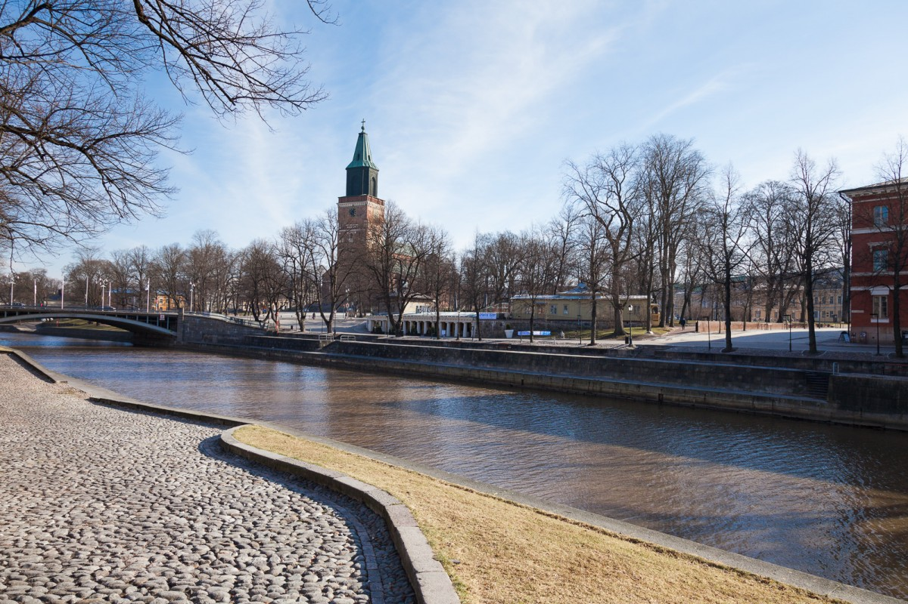

Turku
É a mais antiga cidade finlandesa, fundanda no século XIII. Localizada na proximidade da foz do rio Aura no sudoeste do país. Turku é uma cidade bilingue, com uma das maiores populações de língua sueca da Finlândia, embora a maioria seja de língua finlandesa. Os habitantes de Turku são chamados turkulaiset (singular: turkulainen) em finlandês.
